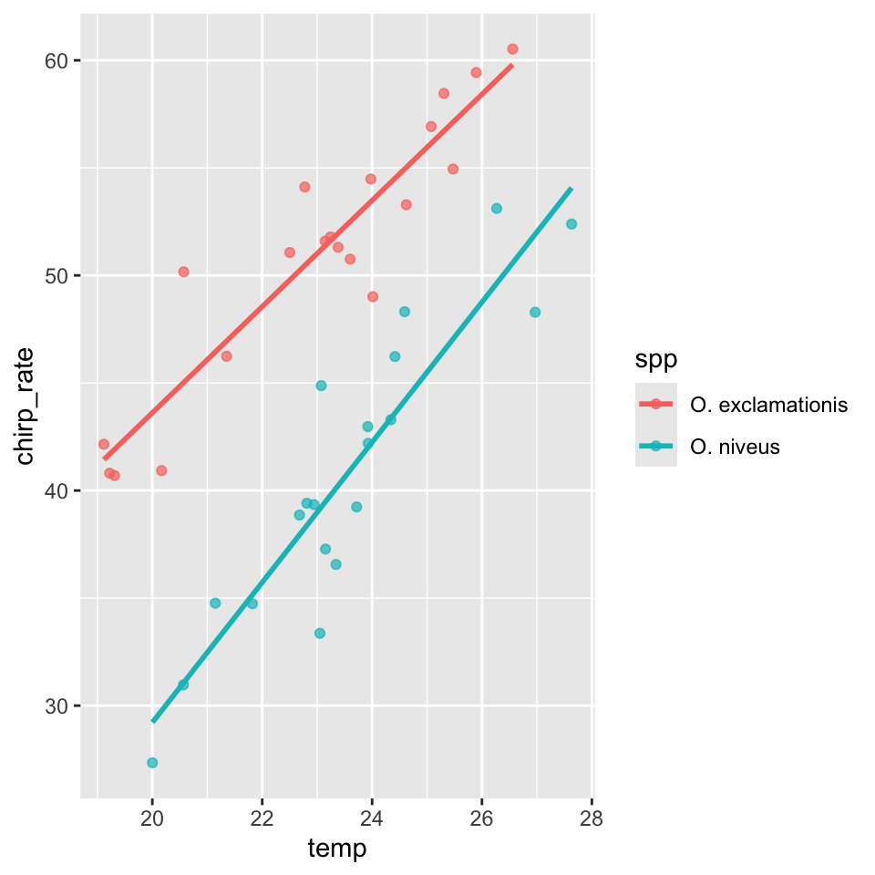
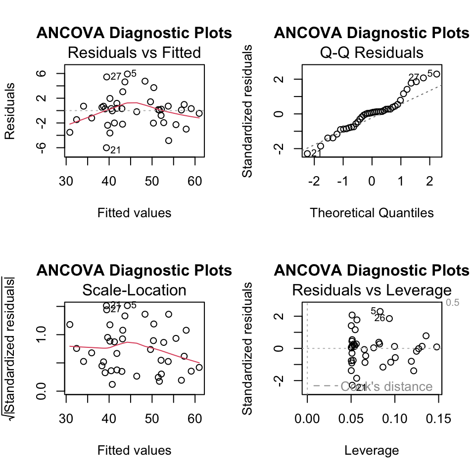
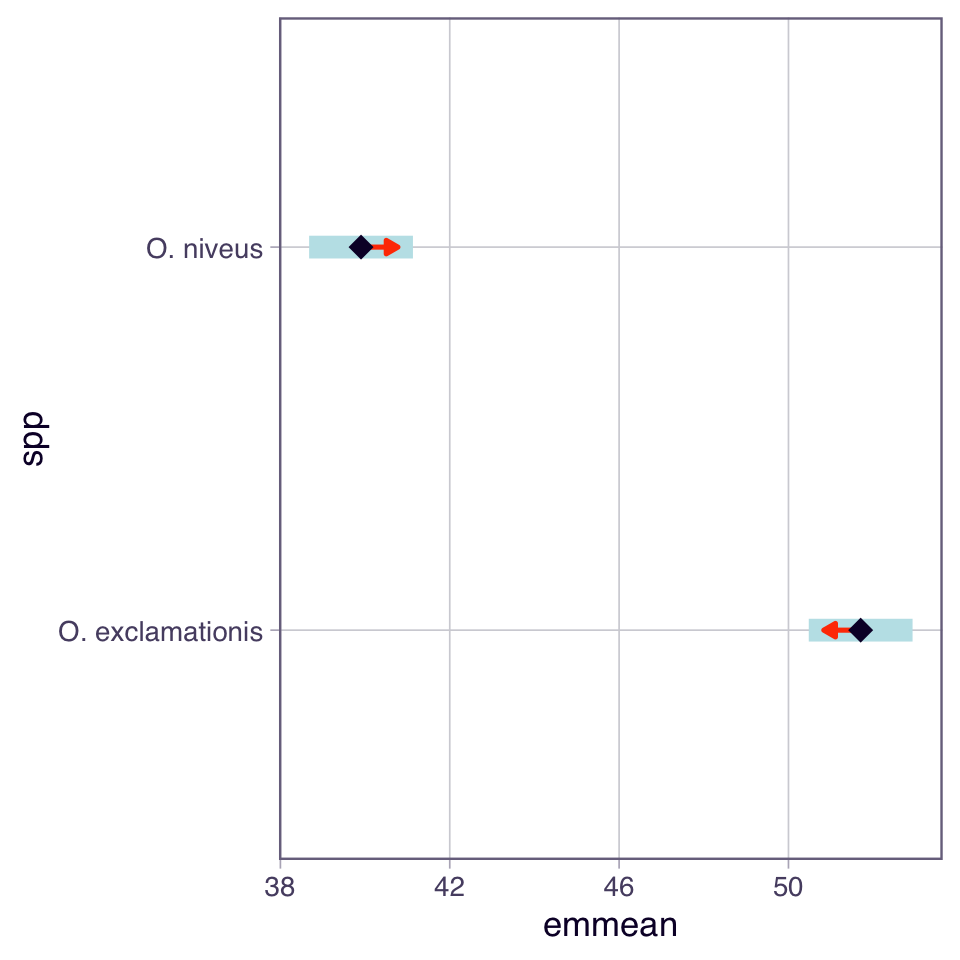
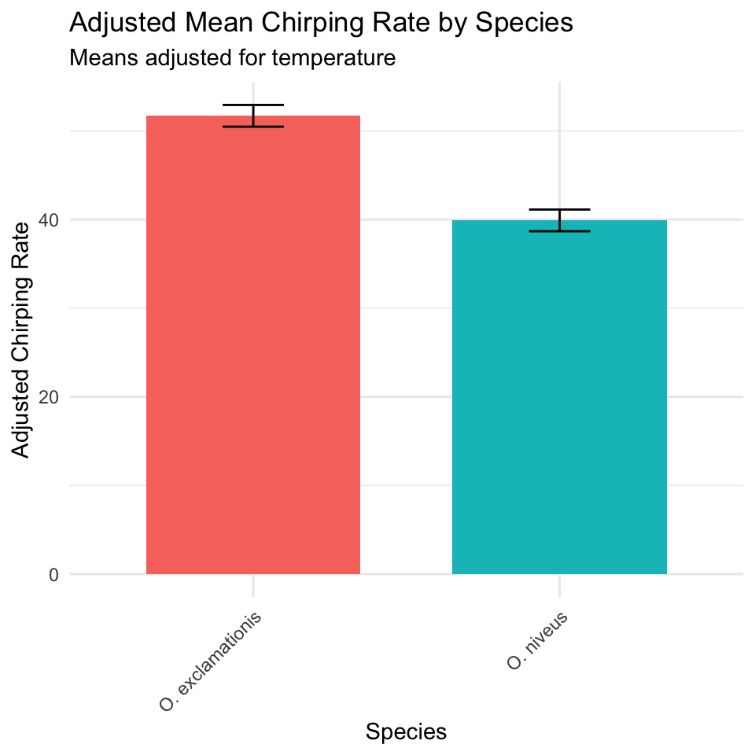
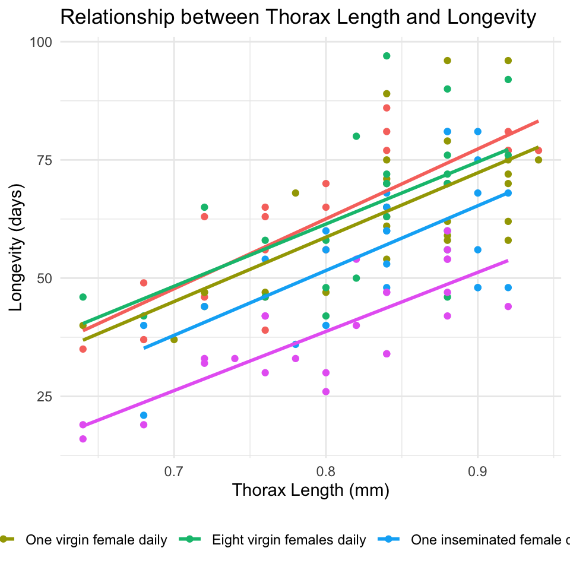
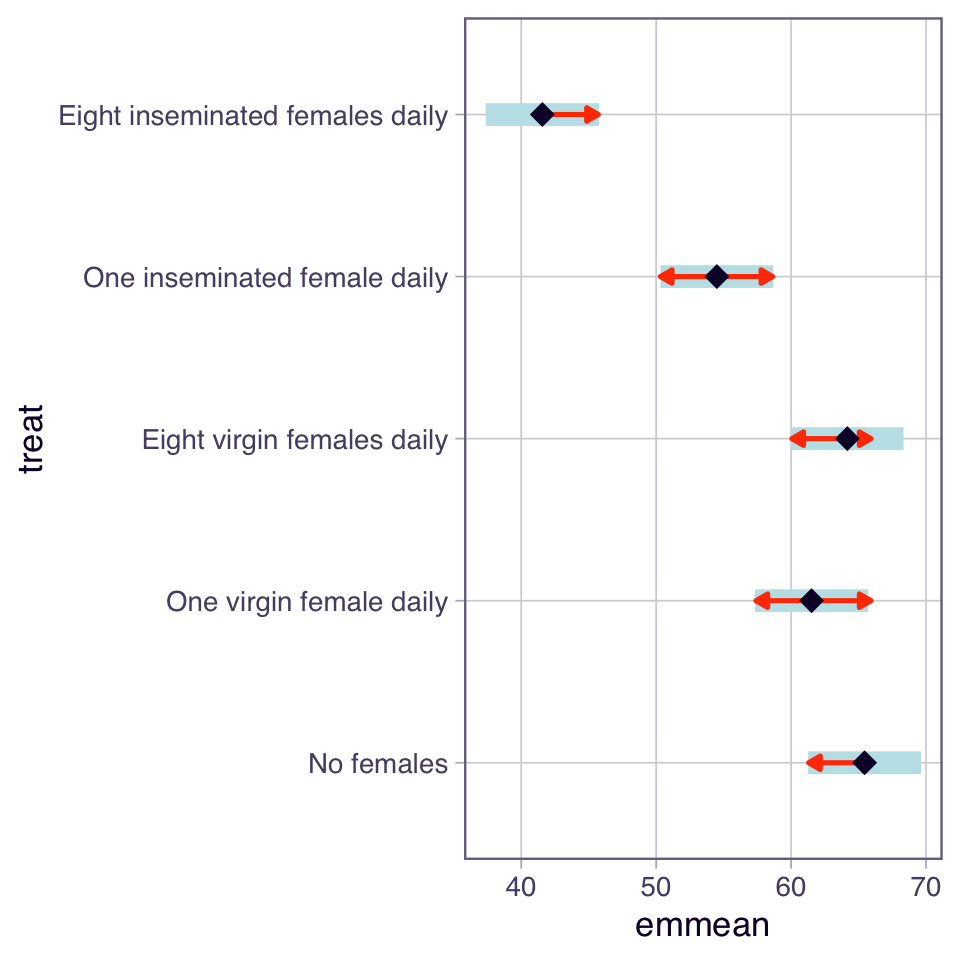
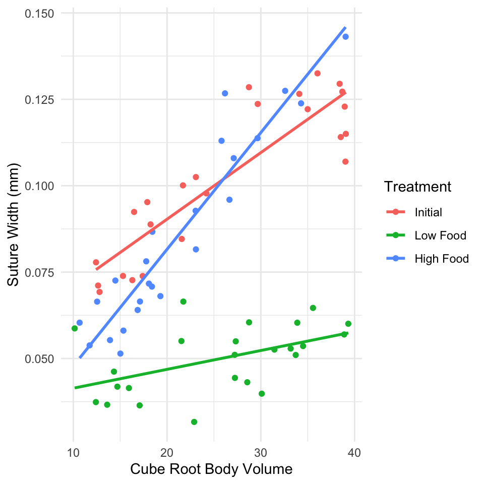

ANCOVA (Analysis of Covariance) combines regression and ANOVA to:
Compare group means while adjusting for a continuous covariate
Increase statistical power by reducing residual error
Control for confounding variables
When to Use ANCOVA
Use ANCOVA when you have:
Response variable: Continuous
Predictor variable: Categorical (factor/groups)
Covariate: Continuous variable that affects the response
Key Assumptions of ANCOVA
Independence of observations
Normality of residuals
Homogeneity of variances across groups
Linearity between response and covariate within each group
Homogeneity of slopes (most critical!) - regression slopes must be not significantly different across all groups
ImportantCritical First Step
Always test for homogeneity of slopes before proceeding with ANCOVA. If slopes differ significantly between groups, standard ANCOVA is inappropriate.
Part 1: Cricket Chirping Analysis
Data Overview
We want to compare chirping rate of two cricket species: - Oecanthus exclamationis - Oecanthus niveus
But we measured rates at different temperatures, and there’s a relationship between pulse rate and temperature. ANCOVA lets us adjust for temperature effect to get a more powerful test!
# Create simulated cricket data based on lecture exampleset.seed(456)n <-40spp <-rep(c("O. exclamationis", "O. niveus"), each = n/2)temp <-c(rnorm(n/2, mean =22, sd =2), rnorm(n/2, mean =24, sd =2))chirp_rate <-40+2.5* (temp -23) +ifelse(spp =="O. exclamationis", 10, 0) +rnorm(n, sd =3)c_df <-data.frame(spp = spp, temp = temp, chirp_rate = chirp_rate)# View data structurehead(c_df)
spp temp chirp_rate
1 O. exclamationis 19.31296 40.69557
2 O. exclamationis 23.24355 51.78799
3 O. exclamationis 23.60175 50.75553
4 O. exclamationis 19.22222 40.80589
5 O. exclamationis 20.57129 50.16484
6 O. exclamationis 21.35188 46.24225
# Plot with regression lines by speciesggplot(c_df, aes(x = temp, y = chirp_rate, color = spp)) +geom_point(alpha =0.7) +geom_smooth(method ="lm", se =FALSE)
`geom_smooth()` using formula = 'y ~ x'

Step 1: Test Homogeneity of Slopes
This is the most critical assumption! We test if the regression slopes are equal across all groups.
options(contrasts =c("contr.sum", "contr.poly")) # for true type 3 anovas# options(contrasts = c("contr.treatment", "contr.poly")) # original version# see below for interpretation...# Test for homogeneity of slopes by including interaction termlm_int_model <-lm(chirp_rate ~ temp * spp, data = c_df)Anova(lm_int_model, type =3)
Interpretation: - p > 0.05, slopes homogeneous - proceed with ANCOVA - p < 0.05, slopes differ and standard ANCOVA is inappropriate
The contrasts setting changes the specific hypothesis being tested for your main effects.
contr.treatment the test for temp is testing the effect of temperature only for the reference species (O. exclamationis)
one level of factor is the “reference” level (“O. exclamationis” comes first alphabetically).
is mean chirp_rate equal to zero for the reference species (“O. exclamationis”) when temp is 0?
With contr.sum, test for temp is testing the average effect of temperature across both species.
“sum coding” or “deviation coding.”
compares each factor level to the grand mean
is average mean chirp_rate (averaged across both species) equal to zero when temp is 0?
Intercept is hard to interpret in both models because temp = 0 is meaningless - center temp variable (e.g., temp_c = temp - mean(temp)) - run model - intercept would then test the chirp_rate at the average temperature - much more interpretable
Step 2: Fit ANCOVA Model
Since slopes are homogeneous (p > 0.05), fit ANCOVA model without interaction term
# Fit ANCOVA model (without interaction)ancova_model <-lm(chirp_rate ~ temp + spp, data = c_df)# Get model summarysummary(ancova_model)
Call:
lm(formula = chirp_rate ~ temp + spp, data = c_df)
Residuals:
Min 1Q Median 3Q Max
-6.0065 -1.9653 0.1923 0.7886 5.9192
Coefficients:
Estimate Std. Error t value Pr(>|t|)
(Intercept) -19.1014 4.7795 -3.997 0.000295 ***
temp 2.7926 0.2048 13.634 0.000000000000000530 ***
spp1 5.9003 0.4296 13.733 0.000000000000000424 ***
---
Signif. codes: 0 '***' 0.001 '**' 0.01 '*' 0.05 '.' 0.1 ' ' 1
Residual standard error: 2.694 on 37 degrees of freedom
Multiple R-squared: 0.8994, Adjusted R-squared: 0.894
F-statistic: 165.4 on 2 and 37 DF, p-value: < 0.00000000000000022
Interpretation
spp1 is clue that contr.sum is active
represents coefficient for first species (O. exclamationis) relative to grand mean.
(Intercept): -19.1014 - average chirp_rate (across both species) when temp is 0
temp: 2.7926 - common slope- for every 1-degree increase in temp- chirp_rate increases by 2.7926 units
spp1: 5.9003- spp1 coefficient - deviation from grand mean for first species- O. exclamationis
Both Type II (technically more appropriate) and Type III end up doing the exact same calculation:
test for temp gets the Sum of Squares for temp after accounting for spp.
test for spp gets the Sum of Squares for spp after accounting for temp.
Step 3: Check Model Assumptions
# Create diagnostic plotspar(mfrow =c(2, 2))plot(ancova_model, main ="ANCOVA Diagnostic Plots")

par(mfrow =c(1, 1))
shapiro.test(ancova_model$residuals)
Shapiro-Wilk normality test
data: ancova_model$residuals
W = 0.96208, p-value = 0.1971
leveneTest(chirp_rate ~ spp, data = c_df)
Warning in leveneTest.default(y = y, group = group, ...): group coerced to
factor.
Levene's Test for Homogeneity of Variance (center = median)
Df F value Pr(>F)
group 1 0.3897 0.5362
38
Breusch-Pagan (BP) Test for homoscedasticity
lmtest::bptest(ancova_model)
studentized Breusch-Pagan test
data: ancova_model
BP = 1.0098, df = 2, p-value = 0.6036
Step 4: Calculate Adjusted Means
ANCOVA compares adjusted means - what each group’s mean would be at the overall mean of the covariate.
# Calculate adjusted means using emmeansc_emmeans <-emmeans(ancova_model, "spp")# Convert to dataframe for plottingcricket_adj_means_df <-as.data.frame(c_emmeans)cricket_adj_means_df
spp emmean SE df lower.CL upper.CL
O. exclamationis 51.70513 0.6049702 37 50.47934 52.93091
O. niveus 39.90462 0.6049702 37 38.67883 41.13040
Confidence level used: 0.95
Step 5: Pairwise Comparisons
# Pairwise comparisons of adjusted meanspairs(c_emmeans, adjust ="sidak")
contrast estimate SE df t.ratio p.value
O. exclamationis - O. niveus 11.8 0.859 37 13.733 <0.0001
Step 6: Visualize Results
# Plot adjusted means with confidence intervalsplot(c_emmeans, comparisons =TRUE)

# Bar chart of adjusted meansc_emmeans_df <-as.data.frame(c_emmeans)ggplot(c_emmeans_df, aes(x = spp, y = emmean, fill = spp)) +geom_bar(stat ="identity", width =0.7) +geom_errorbar(aes(ymin = lower.CL, ymax = upper.CL), width =0.2) +labs(title ="Adjusted Mean Chirping Rate by Species",subtitle ="Means adjusted for temperature",x ="Species",y ="Adjusted Chirping Rate") +theme_minimal() +theme(legend.position ="none",axis.text.x =element_text(angle =45, hjust =1))

Part 2: Partridge Longevity Analysis
Data Overview
We’ll analyze the effect of mating strategy on male fruitfly longevity, using thorax length as a covariate.
# Visualize the relationship between thorax length and longevity by treatmentggplot(p_df, aes(x = thorax, y = longev, color = treat)) +geom_point() +geom_smooth(method ="lm", se =FALSE) +labs(title ="Relationship between Thorax Length and Longevity",x ="Thorax Length (mm)",y ="Longevity (days)",color ="Treatment") +theme_minimal() +theme(legend.position ="bottom")
`geom_smooth()` using formula = 'y ~ x'

Step 1: Test Homogeneity of Slopes
# Test for homogeneity of slopeshomo_slopes_model <-lm(longev ~ thorax * treat, data = p_df)Anova(homo_slopes_model, type =3)
# Fit the ANCOVA model (without interaction)p_ancova_model <-lm(longev ~ thorax + treat, data = p_df)# Get more detailed summarysummary(p_ancova_model)
Call:
lm(formula = longev ~ thorax + treat, data = p_df)
Residuals:
Min 1Q Median 3Q Max
-26.189 -6.599 -0.989 6.408 30.244
Coefficients:
Estimate Std. Error t value Pr(>|t|)
(Intercept) -54.062 10.255 -5.272 0.000000612 ***
thorax 135.819 12.439 10.919 < 0.0000000000000002 ***
treat1 8.006 1.890 4.237 0.000044991 ***
treat2 4.077 1.889 2.158 0.032935 *
treat3 6.730 1.881 3.578 0.000502 ***
treat4 -2.940 1.891 -1.554 0.122749
---
Signif. codes: 0 '***' 0.001 '**' 0.01 '*' 0.05 '.' 0.1 ' ' 1
Residual standard error: 10.51 on 119 degrees of freedom
Multiple R-squared: 0.6564, Adjusted R-squared: 0.6419
F-statistic: 45.46 on 5 and 119 DF, p-value: < 0.00000000000000022
# View ANOVA tableAnova(p_ancova_model, type ="II")
# Pairwise comparisons of adjusted meanspairs(p_means, adjust ="tukey")
contrast estimate SE
No females - One virgin female daily 3.93 3.00
No females - Eight virgin females daily 1.28 2.98
No females - One inseminated female daily 10.95 3.00
No females - Eight inseminated females daily 23.88 2.97
One virgin female daily - Eight virgin females daily -2.65 2.98
One virgin female daily - One inseminated female daily 7.02 2.97
One virgin female daily - Eight inseminated females daily 19.95 3.01
Eight virgin females daily - One inseminated female daily 9.67 2.98
Eight virgin females daily - Eight inseminated females daily 22.60 2.99
One inseminated female daily - Eight inseminated females daily 12.93 3.01
df t.ratio p.value
119 1.311 0.6849
119 0.428 0.9929
119 3.650 0.0035
119 8.031 <0.0001
119 -0.891 0.8996
119 2.361 0.1336
119 6.636 <0.0001
119 3.249 0.0129
119 7.560 <0.0001
119 4.298 0.0003
P value adjustment: tukey method for comparing a family of 5 estimates
# Plot adjusted means with confidence intervalsplot(p_means, comparisons =TRUE)

multcomp::cld(p_means) # Letters = letters
treat emmean SE df lower.CL upper.CL .group
Eight inseminated females daily 41.6 2.12 119 37.4 45.8 1
One inseminated female daily 54.5 2.11 119 50.3 58.7 2
One virgin female daily 61.5 2.11 119 57.3 65.7 23
Eight virgin females daily 64.2 2.10 119 60.0 68.3 3
No females 65.4 2.11 119 61.3 69.6 3
Confidence level used: 0.95
P value adjustment: tukey method for comparing a family of 5 estimates
significance level used: alpha = 0.05
NOTE: If two or more means share the same grouping symbol,
then we cannot show them to be different.
But we also did not show them to be the same.
Part 3: Example with Heterogeneous Slopes
Example where slopes are NOT homogeneous using sea urchin data.
# Create simulated sea urchin data with heterogeneous slopes # used LM to get data estimateset.seed(345)n <-72# 24 urchins per group# Create data frametreatments <-rep(c("Initial", "Low Food", "High Food"), each = n/3)volume <-c(runif(n/3, 10, 40), # Initialrunif(n/3, 10, 40), # Low Foodrunif(n/3, 10, 40) # High Food)# Create suture width with different slopes for each treatmentsuture_width <-ifelse( treatments =="Initial", 0.05+0.002* volume,ifelse( treatments =="Low Food", 0.04+0.0005* volume,0.02+0.003* volume # High Food )) +rnorm(n, 0, 0.01)u_df <-data.frame(treatment = treatments, volume = volume, suture_width = suture_width)# Explicitly set "Initial" as the reference level for the factoru_df$treatment <-factor(u_df$treatment, levels =c("Initial", "Low Food", "High Food"))
# Plot the data with regression linesggplot(u_df, aes(x = volume, y = suture_width, color = treatment)) +geom_point() +geom_smooth(method ="lm", se =FALSE) +labs(x ="Cube Root Body Volume",y ="Suture Width (mm)",color ="Treatment") +theme_minimal()
`geom_smooth()` using formula = 'y ~ x'

Test for Homogeneity of Slopes
# Fit model with interactionurchin_model <-lm(suture_width ~ volume * treatment, data = u_df)Anova(urchin_model, type =3)
# install.packages("interactions") # Run this once if you don't have itlibrary(interactions)jn_model <-lm(suture_width ~ volume + treatment + volume * treatment, data = u_df)# --- The Fix ---# pred = "treatment" (the categorical predictor)# modx = "volume" (the continuous moderator)sim_slopes(jn_model,pred ="volume",modx ="treatment",johnson_neyman =TRUE)
Warning: Johnson-Neyman intervals are not available for factor predictors or
moderators.
SIMPLE SLOPES ANALYSIS
Slope of volume when treatment = Initial:
Est. S.E. t val. p
------ ------ -------- ------
0.00 0.00 9.87 0.00
Slope of volume when treatment = Low Food:
Est. S.E. t val. p
------ ------ -------- ------
0.00 0.00 2.47 0.02
Slope of volume when treatment = High Food:
Est. S.E. t val. p
------ ------ -------- ------
0.00 0.00 13.06 0.00
Summary Checklist for ANCOVA
When conducting ANCOVA, always follow these steps:
TipANCOVA Checklist
Visualize your data - plot response vs covariate, colored by groups
Test homogeneity of slopes - fit model with interaction term
If p > 0.05: proceed with ANCOVA
If p < 0.05: use alternative approaches
Fit ANCOVA model - response ~ covariate + factor
Check assumptions - use diagnostic plots
Interpret results - focus on adjusted means, not raw means
Conduct post-hoc tests - pairwise comparisons if needed
Visualize results - show adjusted means with confidence intervals
Key Points to Remember
ANCOVA increases power by accounting for covariate variation
Adjusted means are what we compare, not raw group means
Homogeneity of slopes is the most critical assumption
Parallel lines in plot suggest homogeneous slopes
Non-parallel lines indicate heterogeneous slopes - use alternative methods
ImportantKey Points from ANCOVA Analysis
Test homogeneity of slopes first - most critical assumption
ANCOVA compares adjusted means at the mean value of the covariate
Increases statistical power by removing variation due to the covariate
Choose appropriate methods based on whether slopes are homogeneous
Visualize your results showing relationship between variables
Check all assumptions using diagnostic plots
Interpret in biological context - what do the adjusted means tell us?
Remember: covariate should be measured independently of the treatment and should not be affected by the treatment itself!